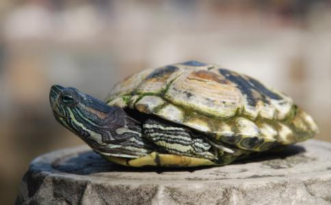

龙树菩萨在《大智度论》中说：“若人种种修诸福德，而无不杀生戒，则无所益。何以故？虽在富贵处生，势力豪强而无寿命，谁受此乐？以是故，知诸余罪中，杀罪最重；诸功德中，不杀第一。世间中惜命为第一。何以知之？一切世人，甘受刑罚，刑残考掠以护寿命。”真正如理如法的放生，财、法、无畏三种布施具足，灭罪积福延寿累德无不见效。在佛法中，动物与人都是平等的众生，因为它们也有佛性，《普贤菩萨行愿品》中说：“若令众生生欢喜者，则令一切如来欢喜。”
放生蛇后的神奇感应
弟子的家族曾和蛇有过怨结。所以我去年发愿要发生蛇来化解我们的怨结。或许是我们家和蛇有怨结。我以前非常怕蛇。只要看到蛇我就很恐惧。多望一眼都怕。
我在2015年阴历3月开始放生蛇。放生蛇一定要先看好地方。一定要有山的地方。山离居民要远。一定是好几十里都没有人住。放蛇一定不能随便放。找到合适的地方后也不可以到处说。原于人对蛇的恐惧和误解。会造成一些人恐慌。还会引来一些捕蛇的人去捕蛇。我找到合适地方后。第一次放了一条蛇。当时还是怕看蛇。放蛇走后，我第二天又购了4条蛇我们有3个人一起去放的，放后我们都轻松。晚上我就梦见自己手上流出好多白色的污垢。（我以前手淫很多年）
我妈说想放蛇我和我妈还有一个佛友又去山上放蛇。又放了4条。后来我们那几天连续放了18条蛇。我就想要是多放点蛇该多好啊。我的经济条件又不好。有这个想法后过几天我到一念佛堂去念佛刚好那念佛堂有放生款。不知放什么好，我提意去放蛇。当时有个居士想放蛇好多年了。一直没有去放，我提出放放蛇她就马上同意了。这个居士出钱最多。我们当时就购下了所有的蛇。总共179条蛇。老板自己还放了两条。放蛇后我们当时一群人都好高兴。
从那次放蛇起我不怕蛇了。这几天梦见蛇。放蛇几天后梦见蛇要我好象要我咬它什么我好象咬了。我就吐了好多东西出来。梦见自己吐了一条鱼，好多年头还在我身体里。那鱼我把他吐出来后鱼也被我放生河里。鱼也活了。我做了这个梦后我感觉自己无比轻松。或许这就是自己业障在消吧。阿弥陀佛！
放生乌龟后的神奇感应
这天正值观世音菩萨成道日，我一早便到菜场买了两只乌龟和一些鱼去放生，为它们念诵放生仪轨后，将其放入附近的河中。
晚上，做了一个非常清晰的梦。梦中有两个背着书包的小矮人请我到他们寒舍喝茶，我跟随他们来到一间屋子，在一个圆桌前坐下，喝完茶后，这两个人送我到门口，并致谢：“今天多亏您相救，我们感恩不尽。”说完，我就从梦中醒了过来。仔细回想梦中的话，突然记起今天所放生的两只乌龟，应是它们托梦以示感谢。
放生泥鳅、鱼类等后的神奇感应
2007年9月23日，佛友们聚集到寺院参加大放生活动。这天天气异常恶劣，风雨交加，很多佛友手中的伞都被吹得摇摇晃晃，大家都渴望大雨早点停下。放生的物命很多，以泥鳅、鱼类为主，共计6万多条物命。在放生前，大家先围绕着它们虔诚地举行放生仪式，这时雨停了下来，随着念诵声越来越整齐，越来越响亮，在我们头顶上方，原本乌云密布的天空中竟出现了一个大洞，太阳钻了出来。就在当时，四周不远的地方天还在下大雨，唯独我们这里出现了太阳，而且阳光越来越强烈，把我们个个照得红通通的。佛友们都明白这是佛力的加持，都非常兴奋，也更坚定了我们的道心。这天来参加放生的多数佛友都是不杀生、严持戒律的佛弟子，每个人都带着一颗慈悲心，来救度这些将被屠杀的可怜众生，举行放生仪式时，没有任何私心杂念和妄想，在这种情况下，自性的光明必然感应佛力加持。这样殊胜的放生场景，是我们的善心与诚心所感召的。佛在多部经典中曾谆谆告诫我们众生平等，现实生活中我们要依教奉行，学习佛菩萨，以慈悲心对人对物，才能无愧于佛陀伟大的教育。
放生有十种利益：
（一）无刀兵劫。（二）集诸吉祥。 （三）长寿健康。
（四）多子宜男。（五）诸佛欢喜。（六）物类感恩。
（七）无诸灾难。（八）得生天上。（九）众生报恩，则诸恶消灭，四季安宁。
（十）人人戒杀放生，则生生不息，善心相感，正似子孙代代相传，永远福寿。
我们有条件应尽力救度即将被杀的动物，若经济上没有能力，也要发大悲心，多念佛号和佛咒回向给被杀众生，为它们种下菩提种子，超拔它们苦难的亡灵。另外，提倡素食是戒杀的根本途径，无人吃肉则何人杀生？《入楞伽经·遮食肉品》里佛说的很清楚：“我观世间无有是肉而非命者，自己不杀，不教人杀，他不为杀。不从命来而是肉者，无有是处。”劝得一人素食即是放生无量。